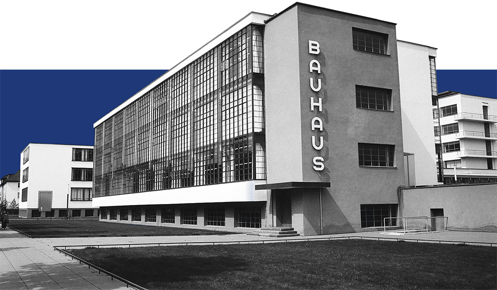
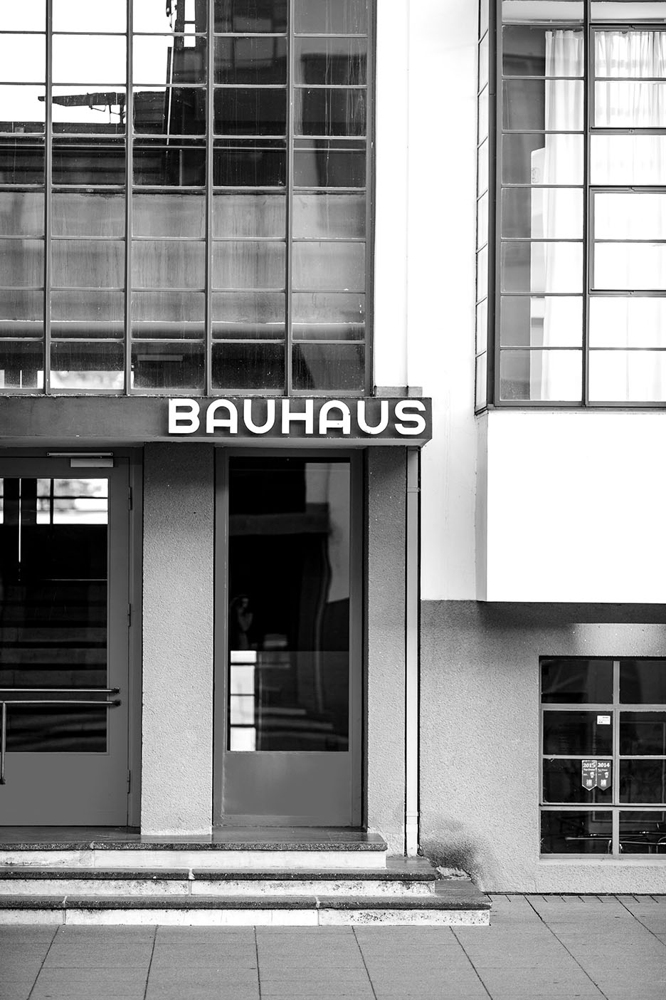
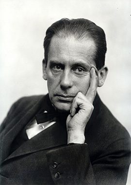
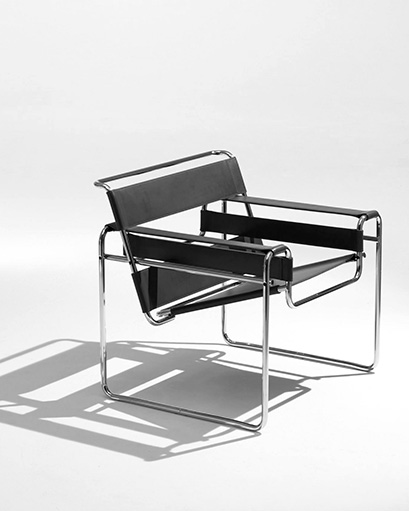

History
From Weimar to Dessau and Berlin, discover the school's evolution, its changing environments, and the events that led to its closure in 1933.

The Bauhaus was a German school of art, design, and architecture founded by Walter Gropius in 1919. It brought together artists, craftspeople, and architects to rethink the relationship between creativity, technology, and everyday life. Its philosophy challenged traditional boundaries and established a new approach to modern design. Bauhaus designs combine art, craft and function.

From Weimar to Dessau and Berlin, discover the school's evolution, its changing environments, and the events that led to its closure in 1933.

Meet the artists, architects, and designers who shaped the movement, from Walter Gropius to Wassily Kandinsky, and explore their influential work.

Though the school lasted only 14 years, its ideas traveled far beyond Germany. Explore how Bauhaus principles continue to influence architecture and design today.